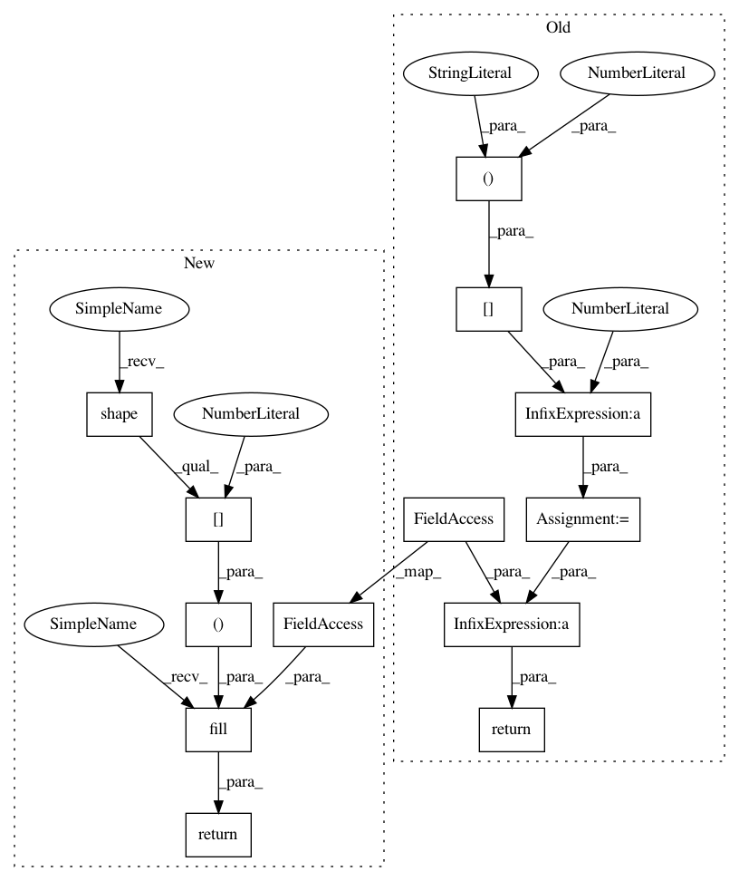

4a28e3ca2c21b48c9b75b99330112d14427b3a6e,GPflow/kernels.py,PeriodicKernel,Kdiag,#PeriodicKernel#Any#,262
Before Change
self.period = Param(period, transforms.positive)
def Kdiag(self, X):
zeros = X[:, 0] * 0
return zeros + self.variance
def K(self, X, X2=None):
X, X2 = self._slice(X, X2)
if X2 is None:
After Change
self.period = Param(period, transforms.positive)
def Kdiag(self, X):
return tf.fill((tf.shape(X)[0],), self.variance)
def K(self, X, X2=None):
X, X2 = self._slice(X, X2)
if X2 is None:
In pattern: SUPERPATTERN
Frequency: 3
Non-data size: 13
Instances
Project Name: GPflow/GPflow
Commit Name: 4a28e3ca2c21b48c9b75b99330112d14427b3a6e
Time: 2016-06-05
Author: james.hensman@gmail.com
File Name: GPflow/kernels.py
Class Name: PeriodicKernel
Method Name: Kdiag
Project Name: GPflow/GPflow
Commit Name: 4a28e3ca2c21b48c9b75b99330112d14427b3a6e
Time: 2016-06-05
Author: james.hensman@gmail.com
File Name: GPflow/kernels.py
Class Name: Stationary
Method Name: Kdiag
Project Name: GPflow/GPflow
Commit Name: 4a28e3ca2c21b48c9b75b99330112d14427b3a6e
Time: 2016-06-05
Author: james.hensman@gmail.com
File Name: GPflow/kernels.py
Class Name: Static
Method Name: Kdiag